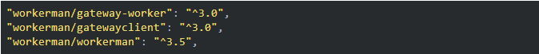
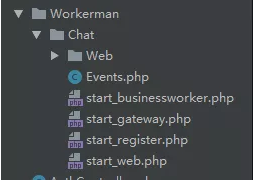
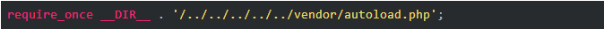
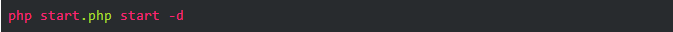
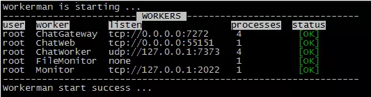

聊天功能是很常见的一种功能，Workerman是一款开源高性能异步PHP socket即时通讯框架。
什么是Workerman？
Workerman是一款 开源 高性能异步 PHP socket即时通讯框架 。支持高并发，超高稳定性，被广泛的用于手机app、移动通讯，微信小程序，手游服务端、网络游戏、PHP聊天室、硬件通讯、智能家居、车联网、物联网等领域的开发。支持TCP长连接，支持Websocket、HTTP等协议，支持自定义协议。拥有异步Mysql、异步Redis、异步Http、MQTT物联网客户端、异步消息队列等众多高性能组件。
以下我们来搭建与配置一下Workerman
第一步：先把workerman里需要用到的扩展composer下来。

第二步：到官方网站把demo全部下载下来，然后放到我们项目中的目录，我这里用的是laravel框架

图片中我就把整个项目都放在了HTTP/Controller/Workerman中。
第三步：我们需要把把以下3个文件的引用部分修改为以下。不然会报路径错误
start_businessworker，start_gateway，start_register

修改完成后我们就可以在liunx直接运行对应的启动文件

如果你是在window下就双击start_for_win.bat运行
运行成功后，你就应该可以看到以下的界面

到此我们搭建基于workerman的通信环境就已经完成。接下来我们就可以根据自己的项目需求进行开发。在此向大家重点说明。我们所有的聊天是逻辑都在目录中的Events.php进行修改。
下面给大家贴一下我编写的部分代码。如何实现一个聊天功能
Event.php
<?php
/**
* This file is part of workerman.
*
* Licensed under The MIT License
* For full copyright and license information, please see the MIT-LICENSE.txt
* Redistributions of files must retain the above copyright notice.
*
* @author walkor<walkor@workerman.net>
* @copyright walkor<walkor@workerman.net>
* @link http://www.workerman.net/
* @license http://www.opensource.org/licenses/mit-license.php MIT License
*/
/**
* 用于检测业务代码死循环或者长时间阻塞等问题
* 如果发现业务卡死，可以将下面declare打开（去掉//注释），并执行php start.php reload
* 然后观察一段时间workerman.log看是否有process_timeout异常
*/
//declare(ticks=1);
/**
* 聊天主逻辑
* 主要是处理 onMessage onClose
*/
use \GatewayWorker\Lib\Gateway;
class Events
{
/**
* 当客户端连接上来的时候
* @param $client_id 此ID为gatewayworker 自动生成ID
*/
public static function onConnect($client_id)
{
Gateway::sendToClient($client_id, json_encode(array(
'type' => 'init',
'client_id' => $client_id
)));
}
/**
* 有消息时
* @param int $client_id
* @param mixed $message
*/
public static function onMessage($client_id, $message)
{
// debug
echo "client:{$_SERVER['REMOTE_ADDR']}:{$_SERVER['REMOTE_PORT']} gateway:{$_SERVER['GATEWAY_ADDR']}:{$_SERVER['GATEWAY_PORT']} client_id:$client_id session:".json_encode($_SESSION)." onMessage:".$message."\n";
// 客户端传递的是json数据
$message_data = json_decode($message, true);
if(!$message_data)
{
return ;
}
// 根据类型执行不同的业务
switch($message_data['type'])
{
// 客户端回应服务端的心跳
case 'pong':
return;
// 客户端登录 message格式: {type:login, name:xx, room_id:1} ，添加到客户端，广播给所有客户端xx进入聊天室
case 'login':
// 判断是否有房间号
if(!isset($message_data['room_id']))
{
throw new \Exception("\$message_data['room_id'] not set. client_ip:{$_SERVER['REMOTE_ADDR']} \$message:$message");
}
// 把房间号昵称放到session中
$room_id = $message_data['room_id'];
$client_name = htmlspecialchars($message_data['client_name']);
$_SESSION['room_id'] = $room_id;
$_SESSION['client_name'] = $client_name;
// 获取房间内所有用户列表
$clients_list = Gateway::getClientSessionsByGroup($room_id);
foreach($clients_list as $tmp_client_id=>$item)
{
$clients_list[$tmp_client_id] = $item['client_name'];
}
// $clients_list[$client_id] = $client_name;
// 转播给当前房间的所有客户端，xx进入聊天室 message {type:login, client_id:xx, name:xx}
$new_message = array('type'=>$message_data['type'], 'client_id'=>$client_id, 'client_name'=>htmlspecialchars($client_name), 'time'=>date('Y-m-d H:i:s'),'to'=>$message_data['to'],'room_id'=>$message_data['room_id'],
'from'=>$message_data['from'],'tag'=>$message_data['tag']);
Gateway::sendToGroup($room_id, json_encode($new_message));
Gateway::joinGroup($client_id, $room_id);
// 给当前用户发送用户列表
$new_message['client_list'] = $clients_list;
Gateway::sendToCurrentClient(json_encode($new_message));
return;
// 客户端发言 message: {type:say, to_client_id:xx, content:xx}
case 'say':
// 非法请求
if(!isset($_SESSION['room_id']))
{
throw new \Exception("\$_SESSION['room_id'] not set. client_ip:{$_SERVER['REMOTE_ADDR']}");
}
$room_id = $_SESSION['room_id'];
$client_name = $_SESSION['client_name'];
// 私聊
// if($message_data['to_client_id'] != 'all')
// {
// $new_message = array(
// 'type'=>'say',
// 'from_client_id'=>$client_id,
// 'from_client_name' =>$client_name,
// 'to_client_id'=>$message_data['to_client_id'],
// 'content'=>"<b>对你说: </b>".nl2br(htmlspecialchars($message_data['content'])),
// 'time'=>date('Y-m-d H:i:s'),
// );
// Gateway::sendToClient($message_data['to_client_id'], json_encode($new_message));
// $new_message['content'] = "<b>你对".htmlspecialchars($message_data['to_client_name'])."说: </b>".nl2br(htmlspecialchars($message_data['content']));
// return Gateway::sendToCurrentClient(json_encode($new_message));
// }
$new_message = array(
'type'=>'say',
'from_client_id'=>$client_id,
'from_client_name' =>$client_name,
'to_client_id'=>'all',
'content'=>nl2br(htmlspecialchars($message_data['content'])),
'time'=>date('Y-m-d H:i:s'),
);
return Gateway::sendToGroup($room_id ,json_encode($new_message));
}
}
/**
* 当客户端断开连接时
* @param integer $client_id 客户端id
*/
public static function onClose($client_id)
{
// debug
echo "client:{$_SERVER['REMOTE_ADDR']}:{$_SERVER['REMOTE_PORT']} gateway:{$_SERVER['GATEWAY_ADDR']}:{$_SERVER['GATEWAY_PORT']} client_id:$client_id onClose:''\n";
// 从房间的客户端列表中删除
if(isset($_SESSION['room_id']))
{
$room_id = $_SESSION['room_id'];
$new_message = array('type'=>'logout', 'from_client_id'=>$client_id, 'from_client_name'=>$_SESSION['client_name'], 'time'=>date('Y-m-d H:i:s'));
Gateway::sendToGroup($room_id, json_encode($new_message));
}
}
}
客户端页面
<!DOCTYPE html>
<html lang="en">
<head>
<meta charset="UTF-8">
<title>与{{$to->name}}的对话</title>
<script type="text/javascript" src="{{asset('js')}}/swfobject.js"></script>
<script type="text/javascript" src="{{asset('js')}}/web_socket.js"></script>
<script type="text/javascript" src="{{asset('js')}}/jquery.min.js"></script>
<link href="{{asset('css')}}/jquery-sinaEmotion-2.1.0.min.css" rel="external nofollow" rel="stylesheet">
<link href="{{asset('css')}}/bootstrap.min.css" rel="external nofollow" rel="stylesheet">
<link href="{{asset('css')}}/style.css" rel="external nofollow" rel="stylesheet">
<script type="text/javascript" src="{{asset('js')}}/jquery-sinaEmotion-2.1.0.min.js"></script>
{{--<script src="https://code.jquery.com/jquery-3.3.1.min.js"></script>--}}
</head>
<style>
#sinaEmotion {
z-index: 999;
width: 373px;
padding: 10px;
display: none;
font-size: 12px;
background: #fff;
overflow: hidden;
position: absolute;
border: 1px solid #e8e8e8;
top: 100px;
left: 542.5px;
}
</style>
<body onload="connect();" style="margin: auto; text-align: center;">
<div style="margin: auto;">
<div style="border: 1px solid red; height: 40px; width: 500px; margin: auto;">
{{--对话窗口头部--}}
<div>
<div style="width: 80px; height: 40px; border: 1px solid blue; float: left">
<img src="{{$to->heading}}" width="80px" height="40px">
</div>
<div style="width: 150px; height: 40px; border: 1px solid blue; float: left">
{{$to->name}}
</div>
</div>
{{--//对话窗口内容--}}
<div class="content" style="width: 500px; height: 400px; border: 1px solid green; margin-top: 40px; overflow-y: auto">
{{--对方的头像与文字--}}
{{--<div style="min-height: 50px;margin-top: 10px;">--}}
{{--<div style="width: 50px;height: 50px; border: 1px solid red; margin-left:10px; float: left">--}}
{{--<img src="{{$to->heading}}" width="50px" height="50px">--}}
{{--</div>--}}
{{--<div style="border: 1px solid red; float: left; min-height: 50px" >dsadsadsadsadsa</div>--}}
{{--</div>--}}
{{--我的头像与文字--}}
{{--<div style= "min-height:50px;margin-top: 10px;">--}}
{{--<div style="width: 50px;height: 50px; border: 1px solid red; margin-left:10px; float: right">--}}
{{--<img src="{{$from->heading}}" width="50px" height="50px">--}}
{{--</div>--}}
{{--<div style="border: 1px solid red; float: right; min-height: 50px" >dsadsadsadsadsa</div>--}}
{{--</div>--}}
</div>
{{--对话发送窗口--}}
<form onsubmit="return onSubmit(); return false;" id="ajaxfrom">
<input type="hidden" name="to" value="{{$to->id}}">
<input type="hidden" name="from" value="{{$from->id}}">
<input type="hidden" name="room_id" value="{{$room}}">
<input type="hidden" name="tag" value="{{$tag}}">
<textarea id="textarea" name="content" class="Input_text" style="margin: 0px; width: 501px; height: 213px;"></textarea>
<div class="say-btn">
<input type="button" class="btn btn-default face pull-left" value="表情" />
<button type="submit" class="btn btn-default">发表</button>
</div>
</form>
房间号{{$room}}
</div>
</div>
</body>
</html>
<script type="text/javascript">
if (typeof console == "undefined") { this.console = { log: function (msg) { } };}
// 如果浏览器不支持websocket，会使用这个flash自动模拟websocket协议，此过程对开发者透明
WEB_SOCKET_SWF_LOCATION = "/swf/WebSocketMain.swf";
// 开启flash的websocket debug
WEB_SOCKET_DEBUG = true;
var ws, name, client_list={};
var to_client_id="";
// 连接服务端初始化函数